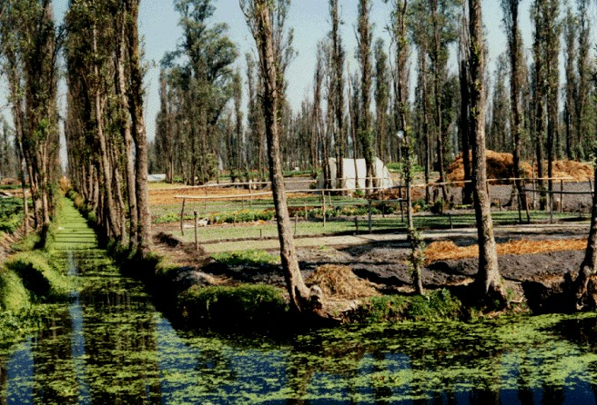

Wind erosion
- What is commonly called the “Dust Bowl”?
- Period of severe dust storms in the American mid-west during the 30s.

Back to course overview
| Location | Land use | Soil loss (t/ha/yr) |
|---|---|---|
| Philippines | Reforested and agricultural | 22-39.7 |
| Morocco | Arid, grazing | 25.0-59.0 |
| Kenya | Semi-arid grazing | 79.5 |
| Bolivia | Andean arid, semi-arid | 5.21-51.8 |
| United Kingdom | Agriculture | 1.9 (net) |
| Lesotho | Agriculture | 7.8 (net) |
| Location | Land use change | Increase in sediment yield |
|---|---|---|
| Rajasthan, India | Overgrazing | × 4-18 |
| Utah, USA | Overgrazing of rangeland | × 10-100 |
| Oklahoma, USA | Overgrazing and cultivation | × 50-100 |
| Texas, USA | Forest clearance and cultivation | × 340 |
| N. California, USA | Conversion of steep forest to grassland | × 5-25 |
| Mississippi, USA | Forest clearance and cultivation | × 10-100 |
| S, Brazil | Forest clearance and cultivation | × 4500 |
| Westland, N. Zealand | Clearfelling | × 8 |
| Oregon, USA | Clearfelling forest | × 39 |
Some research on this:
Case study of soil degradation in Norway: http://www.recare-hub.eu/case-studies/vansjo-hobol-catchment-norway Other interesting european case studies on this website
- Factors responsible for decline in SOM?
- Conversion of grassland, forests and natural vegetation to arable land;
- Deep ploughing of arable soils causing rapid mineralization of labile components of OM;
- Overgrazing, with high stocking rates;
- Soil erosion, by water and wind;
- Leaching;
- Forest fires.
Map of soil organic carbon in topsoil in Europe - JRC report


European website documenting an exhaustive list of natural water retention and erosion control techniques.
An illustrated guide lists them all.
All techniques are also covered in detail, for example strip cropping along contours

Small sections of different crops each at a different stage of maturity Wooden supports for suspending tarps to protect young plants. The water level in this photo is considered by many farmers to be ideal. Duckweed and water hyacinth on the surface of the canal"
P.A. Yeomans - The Keyline plan: “A Keyline is a level or sloping line extended in both directions from a certain point in a valley, called the”keypoint“. This marks or divides the two types of relationship, always in the same vertical interval, that a valley bears to its adjacent ridges. In one of these relationships, that above the Keyline, the valley will be narrower and steeper generally than the adjacent ridges on either side of it. In the second relationship, existing below the Keyline, the valley will be wider and flatter than its immediately adjacent ridges, or shoulders.”

Intensive rotational grazing with an adaptative plan: - animals are forced to eat stuff they like less - controls unwanted plants - can improve soil infiltration properties - can improve root depth by stressing the grass more but less often - can thus help sequester more carbon
Planting winter cereals directly in a pasture
Case study in Australia
Many of the examples that follow are inspired by the Permaculture movement:
“Permaculture is a philosophy of working with, rather than against nature; of protracted and thoughtful observation rather than protracted and thoughtless labor; and of looking at plants and animals in all their functions, rather than treating any area as a single product system.” (Bill Mollison)
Richard Perkins: one permaculture farm where swales are banned
Polyface farm: very innovative, both technically and socially Scratching the Surface: Soil biology in agriculture, March 2017 - Joel Salatin
Homesteader in Vermont: Ben Falk - Whole Systems Design
Interesting orchard concept in Quebec, Canada: Miracle orchard
Grant Schulz - Versaland: Iowa, USA: Water farming upstream - Silvopasture on keyline
Some of those alternative land uses are listed in this book on solutions against climate change: http://www.drawdown.org/solutions
Critique of permaculture: skepteco.wordpress - Bill Mollison, The cult of perma
Not opponent, but smart blog overall on the future of small-scale farming
Interesting debate on a TED talk from Willie Smits
from http://www.resilience.org/stories/2017-01-31/multifunctional-agriculture-a-new-paradigm-of-mixed-cropping/ “The ability of some perennial forage and bioenergy crops to tolerate wet conditions makes it feasible to design harvestable saturated buffers or seasonal wetlands in which nitrate that would otherwise reach surface waters, fertilizes a biomass crop lower on the landscape.”
An interesting report linking land management issues to flooding, and how experimental and modelling studies can help: impact of upland land management on flood risk
Linking hydrological modelling, catchment management and land use
Conclusions are interesting to show results of hydrological modelling that can be use for policy-making: “Both experimental and modelling studies from this site illustrate the potential significance of small-scale land management changes for reducing hillslope runoff peaks: this poses a challenge to scientists, land managers and policy makers. How can we best establish and optimise strategies for mitigation of flood peaks, given other landscape objectives such as economically viable farming, ecological needs, legislative requirements and leisure utilisation?”
Linked to the intensification and re-wilding debate:
Soil conservation in the 21st century: why we need smart agricultural intensification
Old FAO book, that can still be an interesting read:
Homestead and Farm Resiliency: Adaptive Land and Infrastructure Systems for a Changing World https://www.youtube.com/watch?v=xRXtQUVNzqs
Biological complexity, technological simplicity Transfrom dead matter into living matter Maximum outputs for minimum inputs Resilience: diversity x redundancy x connectivity x manageability System establishment distinguished from system maintenance
Vermont: “non britle” climate
Flooding and Drought: Designing Agroforestry Systems to Create Ecosystem Resilience https://www.youtube.com/watch?v=k7PO3SHeIPE&index=223&list=WL
with a riparian buffer before it hits productive land Perennial wild rices in flood plains Conventional pasture vs silvopasture With silvopasture: earlier start in spring, then lower than conventional mid summer, then continues later in fall
advantage of root depth differences